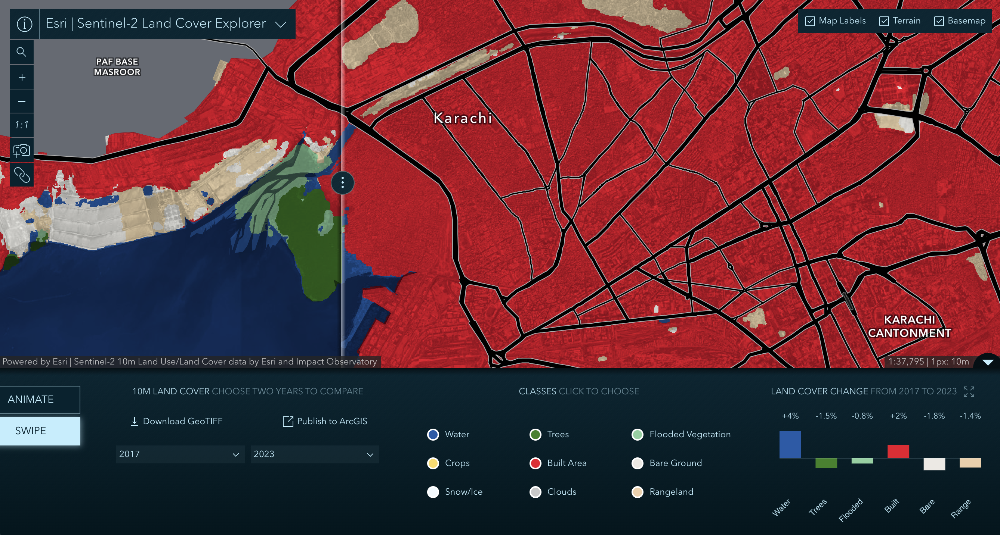

Week 06 · October 2026
Historic Land Cover at Lyari Town
The question
How do natural catchment boundaries, the proximity of water sources, and the adjacency of engineered water infrastructure to the natural catchment area influence water movement to Lyari Town, Karachi, and to what extent does regional water stress reflect local water availability?
The data
The layers used are MERIT-Hydro (2021), on the higher precision setting, with kilometers squared as the unit. This is used under license CC BY-NC 4.0 or Open Database license 1.0. The second layer is from WRI Aqueduct 4.0, license CC BY 4.0, baseline period 1979-2019, and april 2023 data vintage.
The method
The watershed was delineated using MERIT-Hydro (2021), which has a spatial resolution of approximately 90 meters, with the application's higher-precision setting. The unit is HydroBASINS Level 6 sub-basin expressed as a dimensionless ratio of water withdrawals to available renewable water supply. The catchment area was based on the coordinate N24.876, E66.991. The outlet of the catchment snap's to N24.880, E66.995, which is roughly 600 meters away. The ratio of the index's polygon to the site area is 754.16sqkm / 6 sqkm = 125.69.

This is the change in land cover at Lyari Town from 2017-2023, at a 1px=10m, 1:37,795 size, sourced from the ESRI Land Cover Explorer. ESRI Land Cover ExplorerWhat I found
One thing at my site that crosses the boundary of the catchment area is the Hub Dam's water movement infrastructure. It carries water through the catchment area into Karachi. It uses canals and pipes to carry water to treatment and pumping before being dispersed through the city and finally to Lyari town through the main federal trunk and smaller pipes. The high precision site had an area of 510 sqkm and the low precision had a 520 sqkm area, with similar shapes. Its worth noting that Lyari Town recieves 13 million gallons per day (MGD), which is below their 20 MGD demand. The area actually relies heavily on bottled water and water tankers for their supply. This dam is outside and above the catchment area as water flows towards Lyari and the ocean. It has open canals that cross the natural catchment area which can harm water purification.
What this does not show
I am using the delineated catchment boundary at Lyari Town to stand for where water naturally drains around Lyari town, but this might fail because of manmade water management systems originating from the Hub dam which transports water through the catchment area that the elevation-based model cannot account for.
AI use: AI assistance was used to find license and data info using ChatGPT. AI also assisted for tidying the HTML in the week-05 entry, using ChatGPT.